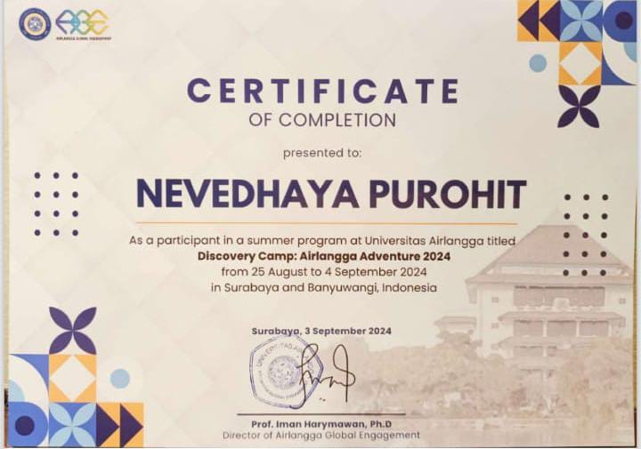
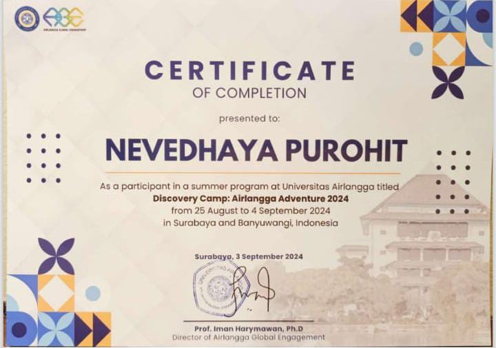

नैवेद्य पुरोहित
एक युवा पत्रकार, लेखक और वॉयस-ओवर आर्टिस्ट हैं। जिनका जन्म पत्रकारिता का तीर्थ कहे जाने वाले शहर इंदौर में पत्रकारिता से ही जुड़े पालीवाल ब्राह्मण परिवार में 11 दिसम्बर 2004 को हुआ था। मीडिया और राजनीति के प्रति कम उम्र से ही आकर्षण रहा है। साप्ताहिक समाचार पत्र टाइम्स ऑफ़ इंदौर और मासिक पत्रिका पालीवाल सखी के लिए सिटी रिपोर्टर के रूप पिछले 5 सालों से काम कर रहे हैं। जहाँ उन्होंने ग्राउंड रिपोर्टिंग और लेखन में व्यावहारिक अनुभव प्राप्त किया है। इसके अतिरिक्त नोएडा में टाइम्स नेटवर्क में न्यूज लाइब्रेरी विभाग में इंटर्नशिप की और वर्तमान में दिल्ली विधानसभा में माननीय विधायक श्री गोपाल राय के कार्यालय में पॉलिसी, रिसर्च, आउटरीच और मीडिया इंटर्न के तौर पर कार्य करते हैं।
नैवेद्य बेनेट यूनिवर्सिटी में हिंदी पत्रकारिता एवं जनसंचार (बीएजेएमसी ऑनर्स - हिंदी) के फाइनल ईयर के छात्र है। जहाँ वे यूनिवर्सिटी की एनएसएस (राष्ट्रीय सेवा योजना) इकाई के उपाध्यक्ष के पद पर भी हैं। उनके कौशल में कंटेंट राइटिंग, न्यूज़लेटर एडिटिंग, रिसर्च और वॉयस-ओवर कार्य शामिल हैं। उनकी प्रमुख रुचि लेखन, पढ़ना, यात्रा करना, फ़िल्में देखना, सार्वजनिक भाषण देना और सामाजिक मुद्दों पर शोध करना है। अपने मज़बूत संचार कौशल और विश्लेषणात्मक सोच के लिए जाने जाने वाले, वे अपनी पत्रकारिता में रचनात्मकता और विश्लेषणात्मक दृष्टिकोण को भी संतुलित करते हैं। अपने परिवार की विरासत में परदादाजी स्वर्गीय गणेशचन्द्र पुरोहित, पालीवाल ब्राह्मण समाज इंदौर के प्रथम पत्रकार के बताए गए सद्कार्यों पर चलकर पत्रकारिता की परंपरा को यह चौथी पीढ़ी आगे बढ़ा रही हैं।

 
